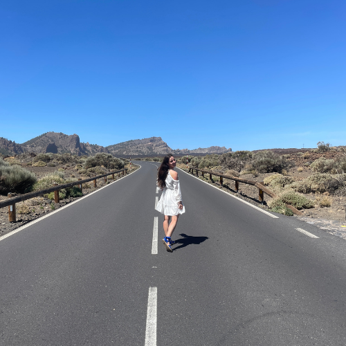
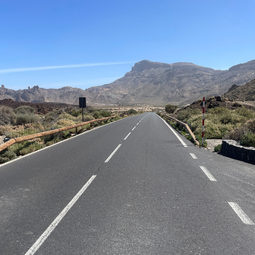
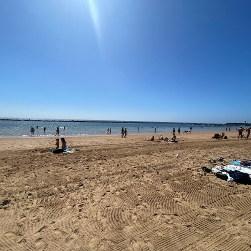
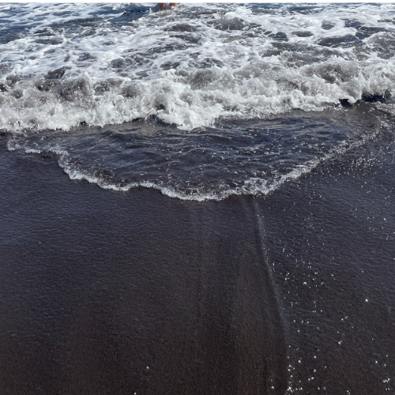
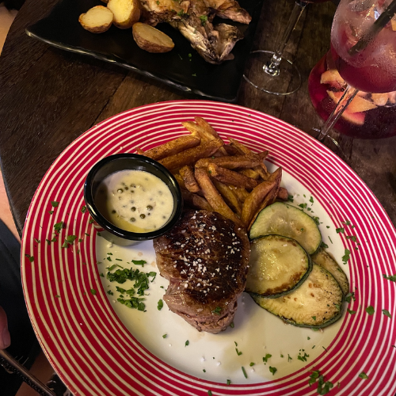
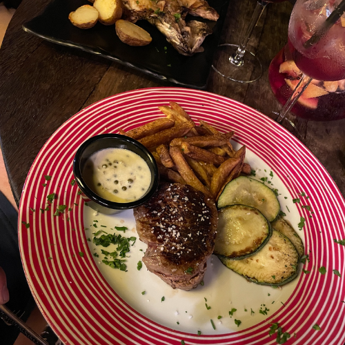

🌋 Tenerife: Dobrodružstvo pod sopkou Teide a medzi divokými útesmi Atlantiku
"Sú miesta, ktoré si pozrieš. A potom sú miesta, ktoré pocítiš. Tenerife patrí do tej druhej kategórie. Ostrov večnej jari, kde sa čierna láva stretáva s tyrkysovým oceánom a kde v jeden deň stojíš na vrchole sopky a v druhý kráčaš po dramatických útesoch nad Atlantikom. Tenerife nie je len o plážach. Je o kontrastoch. O sile prírody. O pocite slobody."
🌋 Výstup na Teide – dotknúť sa neba
 Národný park Teide je úplne iný svet. Krajina pripomína mesačný povrch – suchá, drsná, dramatická. A uprostred nej sa týči sopka Teide, najvyšší vrch Španielska.
Vstať skoro ráno a sledovať, ako sa prvé slnečné lúče opierajú o lávové polia, je zážitok, ktorý sa nedá zachytiť len fotkou. Je to ticho, chladný vzduch a pocit, že stojíš nad oblakmi.
Tip: Ak chceš ísť až úplne na vrchol, potrebuješ povolenie. Ale aj výhľady z lanovky stoja za to.
🌊 Los Gigantes – keď sa oceán láme o skaly


Útesy Los Gigantes sú dôkazom, že príroda vie byť monumentálna. Masívne skalné steny padajú kolmo do oceánu a pri pohľade z lode sa cítiš malý a bezvýznamný.
My sme si ich užili z mora – vietor vo vlasoch, slaná voda na tvári a delfíny v diaľke. Ten moment, keď sa otočíš späť k útesom a uvedomíš si ich veľkosť, je čistý rešpekt.
🏖️ Čierne pláže – iný druh krásy
 Playa Jardín, Playa de Benijo alebo Playa La Tejita – každá má svoj charakter. Čierny sopečný piesok pôsobí dramaticky, najmä pri západe slnka.
Nie sú to typické karibské pláže. Sú surové, silné a autentické. A práve to ich robí výnimočnými.
🍷 Chuť Tenerife
 

Po dni plnom pohybu príde čas spomaliť. Lokálne víno, papas arrugadas so zelenou mojo omáčkou a čerstvé morské plody chutia najlepšie po celodennom dobrodružstve.
Jedlo tu nie je len o chuti. Je o atmosfére, o pomalom večeri pri západe slnka a rozhovoroch, ktoré nechceš, aby skončili.